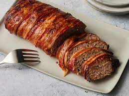

Meatloaf Recipe

andmother 'Nanaw' Rowan made the most delicious meatloaf in the state. W
hen she passed away, she didn't leave me her recipe, but she left me the desire to recreate it. I think this
is it, in flavor and texture. Don't let
the number of ingredients discourage you. It's part of the magic in creating a masterpiece!
Ingredients
- Boeuf hache
- Oignons
- Ail
- Sauce
Steps
- Combine ketchup, brown sugar, and cider vinegar in a bowl; mix well.
- Preheat oven to 350 degrees F (175 degrees C). Spray two 9x5-inch loaf pans wi
th cooking spray or line with aluminum foil for easier cleanup (see Cook's Note).
- Preheat oven to 350 degrees F (175 degrees
C). Spray two 9x5-inch loaf pans with cooking spray or line with aluminum foil for easi
er cleanup (see Cook's Note).
- Place onion and green pepper in c
overed microwave container and cook until softened, 1 to 2 minutes. Set aside to cool.